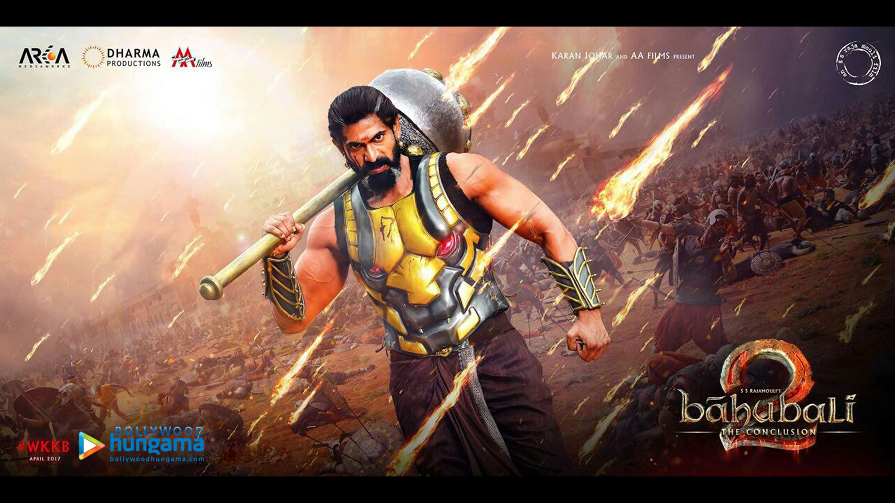

Ballaladeva
Bhallaladeva is the son of Bijjaladeva and Rajamatha Sivagami Devi.
He is raised by Sivagami along with his cousin Amarendra Baahubali.
He is a great warrior and is as equally skilled as his cousin.
However, he is not empathetic towards his subjects like Amarendra and has a ruthless personality.
He is often misguided by his father Bijjaladeva to take evil steps. He ruled over Mahishmati for 25 years.

To My Task